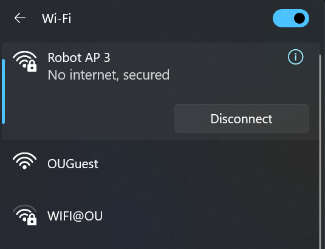
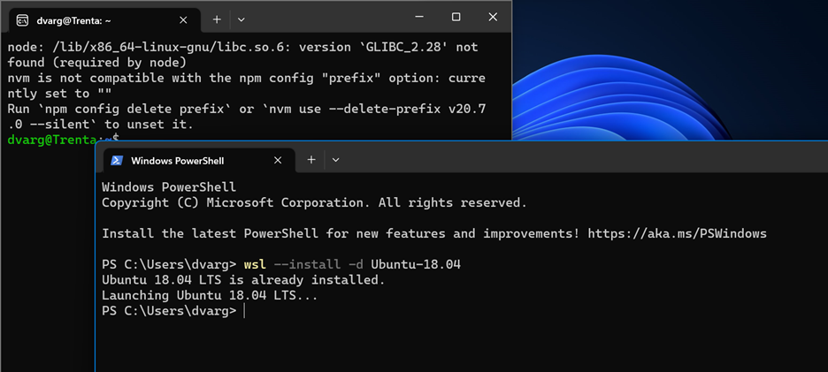

Introduction
This Markdown Book is where one can find all the information regarding AirOU-Lab's Projects.
ARC: Inspired by MuSHR, our robotic system ( Airou Race Car) is designed to autonomously navigate unknown areas and create accurate 2D maps of its travelled path. The vehicles are capable of intravehicular and vehicle-to-infrastructure communication. The robots are capable of Visual Navigation, Navigation using LiDAR, and Navigation using Radar. It can also perform Simultaneous Localization and Mapping using VSLAM and SLAM using LiDAR
LIONN: A general autonomous drone development platform, inspired by MIT-ACL's nx with PANTHER software.
AirOU Race Cars Pro (ARCPro)
ARCPro Overview:
Our robotic car is designed and built to autonomously navigate unknown areas and create accurate 2D/3D maps. Also, the vehicles are capable of intra-vehicular and vehicle-to-infrastructure communication. In this tutorial, we will go through the hardware design of ARCPro first. Then the instruction to turn on the cars and hardware setup is explained step-by-step. Lastly, we instruct you to use ARCPro software to launch different sensors (e.g., LiDAR, depth camera).

Onboard Hardware Specs
ARCPro Main Components:
- Intel NUC Processor
- 2D LiDAR (YDLIDAR X4PRO)
- Intel D435i RGB-D Camera
- Servo Motor
- Controller VESC
Initial Boot-up:
You need to follow these steps to turn on the robot. It is very important to keep this order
Plug VESC battery to VESC (Front wheels should “lock” when VESC is plugged in and you may hear a sound) Plug NUC battery to power convertor. Plugin NUC. Turn on the intel NUC by pushing the power button on the front. The NUC will turn on and you will see the lidar on the top starts spinning!
- The connector to connect the VESC battery
- The connector for connecting NUC battery
- After you connect the batteries:
Note: if the intel NUC does not turn on, please let the class staff know immediately.
Using Car:
You can connect to the car in three different ways: direct access, remote access using ssh, remote access using Remote Desktop Directly connect to the car: you can connect a monitor and keyboard/mouse to the car to get access to the car. You may use a monitor/keyboard/mouse in the lab to connect to the car. Connecting to the car remotely: You can connect to the car through wifi either using Remote Desktop or by ssh.
Starting MuSHR Package:
Mushr is the component responsible for, among other things, controlling the robot. It runs inside a docker container, and generally receives input via bluetooth.
- Once logged in, open a terminal and launch the Mushr docker container using the command
mushr_noetic - You will dropped into a container. Run
roslaunch mushr_base teleop.launch - This will launch the teleoperations and allow you to control the robot with the bluetooth controller. You can also launch rviz(background the roslaunch command with ctrl + z, then run
rviz) to check out a visual representation of the environment, and see the lidar. Make sure to adjust the fixed frame to /car/base_link
Using controller:
After launching teleop, you have to press center button on the Controller the light should start flashing indicating the controller tries to find the robot, after that, it will be constantly on (if the controller is not connecting, you have to connect the car directly to the monitor and following the steps provided in this page). If the controller does not turn on, it may indicate it does not have enough charge, and you have to recharge it. We provide cables in the cabinet for charging. Please put it back after you finish charging. Remember you must press L1 (the Deadman’s switch) to move the robot. The left joystick is for moving back and forth, and the right joystick is for steering.
Starting the camera
The robot uses an Intel Realsense d435i camera that provides RGB, infrared, depth, and IMU(accelerometer and gyroscope) data. This data is used by the other components to build a model of the environment, but it's possible to run the camera components without those other tools. To launch the camera:
- Open a terminal, and run `roslaunch realsense2_camera rs_camera.launch unite_imu_method:=linear_interpolation
- If you'd like to enable the point cloud, add
enable_pointcloud:=true(may not be working) - Open another terminal, and launch Rviz to view the camera output. Set the fixed frame to camera_link, and add topics like /camera/color/image_raw for example. Our software is based on MuSHR software packages. For more information, please visit MuSHR tutorialLinks to an external site.
How to shut down the race car:
-
To shut down the system, press the power button in NUC. Please do not hold it! Otherwise, it damages the NUC over the time
-
Unplug the NUC cable.
-
Unplug the NUC batter
-
Unplug the VESC battery.
Shutdown process is complete.
FAQ and common issues
- Problem: Mushr is reporting VESC out of sync errors, and the LIDAR won't start.
- The cables for the LIDAR probably need to be swapped. Usually this happens because the LIDAR isn't detected, and sits on the same port as the VESC. Check /dev to see if that's the case. If the symlinks for both the ydlidar and VESC are pointing to the same thing, that's an issue.
- I can't connect to the robot.
- First make sure you are on the campus wifi or ethernet. Try SSH-ing before remote desktop. If SSH doesn't work, connect the robot directly to a monitor via HDMI and check the network connection. You can also try pinging it at its address.
AirOU Race Cars (ARC)

Regarding hardware and software information for the ARC system, most information and tutorials can be found on the MuSHR website which is the project ARC is derived from.
For any questions or concerns, feel free to reach out to us at:
tyler.m.roman-1@ou.edu (Software) and dvargas88@ou.edu (Hardware & MiniCity).
There is also a forum for MuSHR issues located in their GitHub organization discussions.
Outside Resources
Regarding the software for the MuSHR/ARC system, most information and tutorials can be found on the MuSHR website
Links to an external site.
For any questions or concerns, feel free to reach out to Tyler Roman at tyler.m.roman-1@ou.edu. There is also a forum for MuSHR issues located in their GitHub organization discussions
Links to an external site..
We recommend at least going through the following tutorials:
Quickstart (Legacy): This will go over getting the MuSHR repo and running the MuSHR simulation.
Intro to ROS: As well as providing some basic insight into how ROS works, it also goes over how to create a package and subscribe to and publish to ROS topics in the MuSHR system
General System Overview: Details on the hardware and ROS topics (I highlight key takeaways in the next section)
For the purposes of documentation, we will only go over methods and information relevant to running the base sensors in ARC system, and anything that might be of resource to a new user
Software
Table of Contents
Introduction
In this part, we instruct you how to run the sensors in ARC both in ROS-based simulator and real hardware. Our software is based on MuSHR software packages and MuSHR simulator. For more information, please visit MuSHR tutorial
Initial Software & Simulation
Introduction
In this tutorial, we’ll go over the bare necessities you’ll need on your base computer to run the simulation stack. By doing so, you’ll also have access to the utilities for the project like the default RVIZ configuration file.
Perquisites:
-
Ubuntu 18.04 dual booted on your machine or Ubuntu 18.04 installed on WSL2 on your Windows Computer.
-
Note: Instructions to Install WSL2
-
Note: WSL1 will be more difficult to use since you have to setup graphics rendering.
-
-
Python2.7
- Note: This should be the default version for Ubuntu 18
Steps
- Create a catkin_ws directory
This will create a workspace to house all the code, including the simulations, on your computer. Open your terminal and copy these commands:
mkdir ~/catkin_ws/src
cd ~/catkin_ws && catkin_make
echo ~/catkin_ws/devel/setup.bash >> ~/.bashrc
source ~/.bashrc
- Install dependencies
Before we can copy the code base, we need to make sure that we have some dependencies. Copy and paste these commands into your terminal.
Make sure you have ROS Melodic installed!
sudo apt install git-all
sudo apt install python-tk
curl -s https://packagecloud.io/install/repositories/dirk-thomas/vcstool/script.deb.sh | sudo bash
sudo apt-get update
sudo apt-get install python3-vcstool
- Ensure we have ROS dependencies
To run the codebase, we need to ensure that we have the proper ROS messages. To install them, copy and paste this into your terminal:
sudo apt install -y ros-melodic-ackermann-msgs ros-melodic-map-server ros-melodic-serial ros-melodic-urg-node ros-melodic-robot-state-publisher ros-melodic-xacro
- Install Necessary repositories
From our github repo, download repos.yaml into ~/catkin_ws/src
Then run:
vcs import < repos.yaml
- Install rangelibc:
Rangelibc is a python library used for different implementations of raycasting for 2D occupancy grids.
Install by running the following commands:
cd ~/catkin_ws/src/range_libc/pywrapper
sudo python setup.py install
cd ~/catkin_ws/src && rm -rf range_libc
-
Run catkin_make to build everything
cd ~/catkin_ws && catkin_make
Then you’ll want to source the workspace environment, so it's added to your path
echo 'source /opt/ros/melodic/setup.bash' >> ~/.bashrc
echo 'source ~/catkin_ws/devel/setup.bash' >> ~/.bashrc
source ~/.bashrc
- Change the default rviz configuration
cp ~/catkin_ws/src/mushr/mushr_utils/rviz/default.rviz ~/.rviz/
- Running the simulation
In one terminal, launch teleoperation:
roslaunch mushr_sim teleop.launch
In another terminal, launch rviz:
rviz
You should now see the simulation for the ARC system.

Running The Sensors
Introduction
The sensor launch file used in teleoperation can be found in mushr_hardware.
In this section, I’ll go over how to launch the sensors - both independently and all at the same time - in the scenario where you do not want to enable teleoperation and would just like to configure sensor data.
Steps:
- SSH Into Robot
After turning on the robot and connecting to the WiFi, we first need to SSH into the robot.
From your base computer run:
ssh robot@10.42.0.1
- Navigate to the mushr_hardware directory
The launch file that is executed during teleoperation is located in the mushr_hardware package. To get to the launch file, run the follwing commands:
roscd mushr_hardware && cd launch/racecar-uw-nano
- Run sensors.launch
Run the following command:
roslaunch sensors.launch racecar_version:=racecar-uw-nano
From a separate terminal (either in your base computer or SSH’d into the robot) run:
rostopic list
And you should see a series of topics relating to the sensors.
Note on Sensor topics:
To get any information from the depth camera, look at the topics that contain ../camera/..
- such as ../camera/depth/image_raw and ../camera/color/image_raw which contains depth information and rgb color data, respectively, for the captured frame.
Now if you were to open RVIZ from your base computer, you should see a list of topics that you can add which relate to the sensors onboard the robot
Note on Sensors in RVIZ:
You may not be able to visualize the LiDAR information; in the example below, I show the rgb and depth information from the depth camera.
Explaining sensors.launch
With your text editor of choice, open sensors.launch located in .../mushr_hardware/launch/racecar-uw-nano/:

Lines 4-6: we define variables for the roslaunch file
-
racecar_version: For our purposes this will always be racecar-uw-nano and this used to refer to files relating to this version of the car
-
car_name and tf_prefix: This is used to prefix the topic names. You would only want to specify this if you are working with multiple cars and need to differentiate between sensors and topics
Line 8-9: load a sensors configuration file specific to our racecar version
Lines 11-18: launch the sensor nodes which result in sensor data being published:
-
11-14: Launch the realsense depth camera with a 10 second delay
-
15-18: Launch the lidar sensor
Line 20: launches the push_button on the front of the car. As of right now, the push button has no functionality.
Note on single sensor testing:
If you want to just launch one sensor, you can refer to the hardware ROS packages.
For the realsense d435i camera, we run the command:
roslaunch realsense2_camera air_d435i.launchFor the lidar, we run the command:
roslaunch ydlidar lidar.launchFor the t265 tracking camera, we run the command:
roslaunch realsense2_camera rs_t254.launch
System Overview

The main takeaway from this diagram should be that creating your own controller (catkin package) is as simple as subscribing to sensor nodes and publishing to Mux
NOTE:
For the Ackermann steering commands, there are 4 levels:
- Safety
- teleop
- navigation
- default
Autonomous drive messages should be published to /car/mux/ackermann_cmd_mux/input/navigation
Notable Packages:
(Bullet indentations represent depth in file structure)
mushr_sim: Contains scripts for the simulation
mushr_base: Ties all other packages together
mushr_hardware: Contains launchfiles for running the car and contains the sensor packages
-
ylidar: Contains scripts and launch files for interfacing with the 2D lidar
-
realsense: Contains scripts and launch files for interfacing with realsense camera sensors (d435i and t265)
-
Vesc: Contains scripts for interfacing with the vesc
Using RVIZ
Introduction
RVIZ is a tool in ROS that can be used to visualize the information coming from the output of your ROS topics. In many cases, this can be a very useful tool for ensuring that the robot's components are working properly.
In this section, I’ll go over how to visualize information from the LiDAR and real sense camera:
Note: Make sure you’ve configured your ROS environment variables in your .bashrc file which allow you to receive information from the ARC robot
ROS_MASTER_URI=http://10.42.0.1:11311
ROS_IP=YOUR-IP
Steps:
- SSH into the robot and launch teleop.launch in mushr_base Launch the following commands:
ssh robot@10.42.0.1
roslaunch mushr_base teleop.launch
At this point, you should see a lot of output on the console detailing the startup process as the sensors turn on and topics start publishing data.
- On your base computer, run RVIZ
In a separate terminal run:
rviz
You should now see something like this:
NOTE: If you do not, see the same type of map as seen in the picture then you may not have the default mushr rviz configuration. In which case, go to software install setup and make sure to add rviz.default.
- Add a topic: Real Sense d435i RGB camera image and depthcloud
Click on the add button in the bottom left corner.
This should load a new window which looks like this:
You’ll want to select:
- /car/camera/color/image
- /car/camera/dept/DepthCloud
- /car/camera/dept/image
After which, you should be able to see the camera feed in the bottom left and a depth cloud originating at the car model:
This picture shows the depth camera rgb and depth image topics:
Hardware
Table of Contents
Introduction
In this section, we talk about how to plugin in the car batteries and how to run teleoperation as well as provide general information pertaining to the hardware on the cars.
As mentioned, this project is derived from the muSHR car project. As such, MuSHR has their own documentation and although this documentation should have all you need to get started, we encourage you to check out the work done by the MuSHR team and some of their great tutorials.
Initial Boot-up
Introduction
In this tutorial, we will show how to run the robot in teleoperation mode. This involves plugging in the batteries, connecting to the robot's network, and launching the teleoperation ROS launch file.
Steps
- Plugin The Main Battery:

- Plugin The VESC Battery:

(Front wheels should “lock” when VESC is plugged in)
- Connect to Robot Wi-Fi Network:
Connect to the network named "Robot AP robot number" (Example: Robot AP 3) 
NOTE:
It may take up to 30 seconds for the network to appear as a possible connection
- SSH Into The Car: If using WSL, open the Ubuntu 18.04 Terminal

Or if you're already using a linux OS, just open the bash terminal
In the terminal, enter the command:
ssh robot@10.42.0.1
You should see something like this:

- Connecting The Bluetooth Controller:
Press the center button on the PS4 controller to pair
- If it does not connect, see here

- Starting Teleoperation:
To start teleoperation and drive the car manually with the sensors active, enter:
roslaunch mushr_base teleop.launch
After awhile (like 15-20 seconds), you should see the sensors turn on (LiDAR and realsense cameras) and be able to drive it manually.
- While holding the Deadman's Switch (L1), you can use the left joystick to go forward and backward and the right joystick to steer left or right.
How to shut down the race car:
-
To shut down the system, press Ctl+C. Allow 10--15 seconds to completely shutdown.
-
Then in the same terminal run:
sudo shutdown -P now -
Unplug the main battery and VESC battery. Shutdown process is complete.
Hardware Info
x1 2D LiDAR
-
Range: 0.12 – 10m
-
Scan Angle: 360°
x1 Intel D435i Depth + RGB Camera
-
Range: 0.3 – 3 m
-
Depth Field of View (FOV): 87° × 58°
-
Depth frame rate: Up to 90 fps
-
RGB sensor FOV (H × V): 69° × 42°
-
RGB frame rate: 30 fps
x1 Intel T265 Tracking Camera
x1 20 Kg Servo Motor
x1 VESC (50A)
x1 Brushless Motor
-
RPM/V: 5900kV
-
Max RPM: 50,000
Misc
Table of Contents
Introduction
This section is dedicated to information which does not fit into specific tutorials or general information for the software or hardware. This would be frequently asked questions or troubleshooting for example.
WSL2 Installation
Introduction:
To work with most of the robotic system, you need to have ROS installed on your device and to have ROS, you have to have Ubuntu. In this tutorial, we show you how to install Ubuntu on a Windows device so that one can use ROS melodic.
Steps
- Open Powershell: Every Windows operating system comes with PowerShell ready to launch. All you do is open windows PowerShell like the following:
-
Install Ubuntu 18.04 for WSL2: Next, you will enter the following command:
wsl --install -d Ubuntu-18.04
You will then have Ubuntu 18.04 downloaded onto your computer. Please note this will take a low amount of storage and may take up to 2 minutes.
The following is an example of what will appear after the command is entered. Note that since I have it already downloaded, nothing will change for me.

After that, you should restart your computer and then you'll have access the UBuntu terminal.
Pairing Bluetooth Controller
Introduction
Throughout development, the Bluetooth controllers have been notorious for not connecting to the ARC. If you encounter any troubles, here’s the simplest and fastest way to reconnect the Bluetooth controller.
Steps:
- Connect to the robot Wi-Fi and SSH into the robot (see Initial Boot-Up)
Next run, the command:
bluetoothctl
Bluetoothctl is a terminal program that can be used to trust, pair, and connect Bluetooth devices.
Upon running bluetoothctl, you should see a list of currently connect devices Run the following command to search for available connections:
scan on
- Put the Bluetooth controller into pairing mode
Press and hold the PS button and the Share button at the same time until the light bar starts flashing in pairing mode:
- Trust, pair, and connect to the Bluetooth controller.
Once you've run scan on you should see a list of devices appear in the terminal.
When you see "Wireless Controller", copy the MAC addresss and enter:
trust <MAC Address>
connect <MAC Address>
Example:
After doing such, the light bar should stop flashing and remain a constant white, blue, or purple color at which point the device is connected.
NOTE:
If you have any errors, try waiting for the controller to leave pairing mode and then try just pressing the PS button. There’s a chance the device is trusted and ready to be connected but couldn’t do so.
LIONN (Panther Derivation)
The LIONN project (Localization/mapping and Implementation Of Neural Networking) is a derivative of the MIT ACL Lab's nx Drone Platform, combined with their PANTHER software package.
Hardware
The hardware is based on the MIT Aerospace Control Lab's nx Platform. Also see their list of parts.
Components
Below is a comprehensive list of the parts used to build the drone platform.
| Section | Part Name |
|---|---|
| Frame | Frame Kit w/ PCB Central Plate (S550 Frame Kit) |
| Custom 3D-Printed Body | |
| Custom 3D-Printed Body-PCB Interface | |
| Custom 3D-Printed Legs | |
| Motor Assembly | Motors (6x FLASH HOBBY D2836 1500KV) |
| Propellers (6x) | |
| Electronic Speed Controllers (6x QWinOut 2-4S 30A ESC) | |
| Computation | VOXL Flight Deck |
| Intel NUC (NUC11PAHi7) | |
| Power Supply | LiPo Battery (5200 mAh, 11.1V) |
| Voltage Step-Up Board (150W DC-DC 19V) | |
| Power Distribution Board (MATEK XT60 PDB) | |
| Remote Control | Receiver (SPM9745 DSMX) |
| Transmitter/Controller (DXS SPM1010) |
As a note, the parts used from the frame kit are:
- Central PCB top plate
- Central PCB bottom plate
- Injection moulded arms (x6)
3D printing
A zip containing the STL files for the project is available for download.
As a note, the landing gear (Landing Gear.STL) was printed in flexible TPU and the main base (Couple Base.STL) in rigid PETG. The rest was printed in PLA.
VOXL Flight Deck
We use an all-in-one dev kit provided by ModalAI called the VOXL Flight Deck.

The main board is the Voxl-Flight which contains 2 modules working in tandum:
- VOXL:
- Android Flight Computer
- Wi-Fi Modem + Radio
- Flight Core:
- Flight controller running PX4 firmware
The Flight Deck package also includes several other components which are useful:
- Green resin frame
- Vibration dampers
- Cooling fan
- 4 Cameras
- Power module (Power Module Kit v2)
- PWM Breakout Kit (M0022 board and MCBL-00004 cable)
Intel NUC
The NUC acts as the main processor for the drone.
Remote Control
The VOXL Flight will take a variety of inputs to its J1004 RC connector.
We used a Spektrum receiver connected using the included MCBL-00005 cable to the VOXL's J1004 connector.
This receiver was then paired with a Spektrum controller and calibrated, both using QGroundControl.
While the VOXL Starter Guide includes some calibration instructions, PX4 also provides an RC Setup Guide.
Software
In short, the software stack consists of two devices, the VOXL and the NUC, connected via Ethernet so that ROS can communicate between devices.
Main Software Components
PX4 Platform
The VOXL Flight's software stack is based on the PX4 flight stack. For a beginner guide, see this guide by PX4.
In short, this bundle includes the following
- PX4 Autopilot
- QGroundControl (QGC)
- MAVSDK (communication between QGC and flight controller using MAVLink protocol)
ROS
ROS is a flexible software framework to allow different compartmentalized processes for robotics.
PANTHER
The Planner software is based on the MIT-ACL's PANTHER.
Software Versions
Operating Systems
The VOXL Flight uses the system image for SDK version V0.9.5, loaded onto the VOXL using the SDK Upgrade instructions.
The NUC is flashed with the standard Ubuntu 20.04 image.
ROS
The NUC uses ROS Noetic while the VOXL's image (see OS section) comes bundled with ROS Indigo. The two versions are both ROS 1, and as such are generally compatible.
Accessing the Drone
Connecting to the VOXL
ModalAI provides a Developer Bootcamp for the VOXL which contains lots of useful information and the basic setup steps we used.
Developers may connect to the VOXL in one of the following ways, but Wireless via DEV Network is currently configured.
Wired via microUSB using ADB
Be sure to connect using the built-in microUSB port, not the USB extension.
- Assure the VOXL is powered on.
- Connect the VOXL and developer machine using microUSB-to-USB-A cable.
- Run
adb
For more information, see the VOXL adb setup guide.
Wireless SSH via VOXL Network
The VOXL can be configured to transmit a wireless network.
- Assure the VOXL is powered on.
- First, connect to the wireless network (named
voxl-wifi) using the default password1234567890. - To SSH into the VOXL, run
ssh root@192.168.8.1, providing the default passwordoelinux123.
For more information, see the VOXL wifi setup guide.
Wireless SSH via DEV Network
The VOXL and NUC are can beconfigured to connect to an existing development network.
- Assure the VOXL, NUC, and development PC are powered on.
- On the development PC, turn on wifi and the broadcast using the Ubuntu Settings GUI.
- On the development PC, SSH into the VOXL using the following BASH command. Ensure you are connecting to the root user.
ssh root@10.42.0.139
- Provide the root password (default
oelinux123).
For more information, see the VOXL wifi setup guide.
Web Interface
The VOXL will transmit a web interface summarizing the VOXL's information and giving camera previews.
When on the same network as the VOXL (either its own network or a developer network), this web interface can be found at the VOXL's IP address via http in the web browser (e.g. http://10.42.0.139/).
For more information, see the VOXL Portal guide
QGroundControl
Our development PC is configured to automatically connect to the VOXL whenever the VOXL is connected to its hotspot and QGC is openned.
You can also connect to QGC via the microUSB extension cord (VOXL usb-jst) plugged into the Flight Core's USB connector. This USB connector doesn't connect to the Linux OS on the VOXL, instead connecting directly to the PX4.
For more information, see the VOXL QGC connection guide
Setup Guide
This document details the steps to implement the setup for the LIONN platform once the hardware is finished and the software is installed.
Setup VOXL
The VOXL Developer Bootcamp from ModalAI was used to setup the VOXL.
The latest VOXL image was loaded (see Software) and the voxl-configure-mpa script to configure the different services on the VOXL based on the hardware shipped with the VOXL Flight Deck (see voxl-configure-mpa)
Testing VOXL Motor connections
Two methods were used to test if the VOXL was able to control the propeller motors.
Ensure the propellers are removed before testing!
Generate a PWM signal
The main method to test connections is using QGroundControl. Once connected (see Software Starter Guide < QGroundControl) the QGroundControl app provides configuration for the drone. In the Motor tab, a test slider can be used to power up the motors.
Secondly, when unable to connect the VOXL to QGC, ModalAI provides a Flight Core PWM ESC Calibration script that can be used to bypass QGC.
Test the PWM signal coming from the VOXL
In order to ensure the PWM connection was provided to the ESCs in the first place, a simple LED circuit was created and connected to the PWM output for one of the 6 motor outputs on the VOXL's PWM breakout board. The LED's ground pin was connected to the PWM ground, and the positive pin was connected to the PWM's power and signal pins.
When the signal was sent using one of the above methods, the LED would flash, indicating the PWM signal being successfully sent.
Setup NUC
Network Configuration
Enable the SSH server on the NUC and configure the firewall, enabling ssh connections (port 22). Ensure that in the /etc/ssh/sshd_config file, PasswordAuthentication yes exists as a line.
Enable wifi using nmcli and connect to the VOXL's wifi network.
Now, once connected to the VOXL's wifi network, the developer computer can SSH into both the VOXL and the NUC.
The NUC and VOXL have instead been configured to network using a wired ethernet adapter. This is done using the sudo ip ad add IP_ADDRESS/24 dev eth0 command on each device with it's respective IP (see this guide).
Network Summary
The below table summarizes the IPs that each component of the platform uses. The Wired IP is the static IP set above. Currently, the drone is configured to connect to an ad hoc network on our development PC, and the wireless IPs for the devices are in the Dev Hotspot column.
| Device | Wired IP | Wireless IP (on VOXL Network) | Wireless IP (on DEV Hotspot) |
|---|---|---|---|
| NUC | 10.0.0.10 | (Dynamic) | 10.42.0.180 (Dynamic) |
| VOXL | 10.0.0.20 | 192.168.8.1 (Default) | 10.42.0.139 (Dynamic) |
| DEV | N/A | (Dynamic) | 10.42.0.1 |
Using these, the VOXL can connect to the NUC and vice versa.
To test the connection between the two, run ping using the appropriate IP for each client set above.
Next, set up ROS on the VOXL and NUC.
Setup ROS
Once the drone's networking infrastructure is established, we can set up ROS.
Setup ROS on VOXL
This guide was used to setup ROS on the VOXL.
Specifically, the following values were set in the my_ros_env.sh on the VOXL:
export ROS_IP=10.0.0.20 # VOXL Static IP
export ROS_MASTER_IP=10.0.0.10 # NUC Static IP
export ROS_MASTER_URI=https://${ROS_MASTER_IP}:11311/ # ROS URI on NUC
Setup ROS on the NUC
MAVROS
MAVROS is used to send MAVLink commands (i.e. flight commands) from a ROS node to the VOXL's PX4 Flight controller.
First, MAVROS comes preinstalled on the VOXL but the NUC will need to have MAVROS installed (tutorial). An example program provided by PXY is their MAVROS Offboard control example
ModalAI provide a mavros_test node to fly in a figure 8, which can be done using this tutorial. You will also need to build your ROS package before running it (tutorial).
You may need to configure the NUC to run the ROS Nodes on boot.
JetBot
Overview

A set of 10 Jetbots have been constructed using Nvidia's guide. They have been flashed with the base JetBot image.
For software questions, contact Matthew Carroll (matthewcarroll@ou.edu).
For hardware questions, contact Phong Nguyen (phong.t.nguyen-1@ou.edu).
CS 5013 - Artificial Intelligence
For the Final Project of CS 5013 in Spring 2024 at the University of Oklahoma, graduate students will utilize this hardware plaform to implement a machine learning algorithm on their JetBot. They will utilize computer vision to navigate the JetBot via its wide-angle camera.
For setup instructions for students of CS 5013, continue to Setup.
JetBot Setup
Your JetBot is starting with (roughly) the base JetBot image available.
Hardware Overview
The JetBot can be turned on by using the button on the rear left corner, through the hole in the frame. This will turn on the external power bank, supplying power to the single-board computer (Jetson Nano) and the motor power supply board.
Other hardware includes a wide-angle camera (with a lens cap 😛), two wheel/motor assemblies and a roller ball. The single-board computer has a wifi card for connectivity, a small display for debug/configuration info, and an SD card holding the storage for the device.
Network Setup
In order to connect to the JetBot, your development machine should be connected to the same network as the JetBot. Continue for instructions to do so.
Making your own network
The JetBot kits have a 2.4GHz wifi card included. Your network/hotspot will need to include the 2.4GHz band, not just the 5GHz.
Firstly, your development machine should be connected to a network (preferrably one you control). The easiest way to do this is to configure your machine to transmit an ad-hoc (hotspot) network. See instructions for Windows, Mac, or Ubuntu.
By using an ad-hoc network, you can access your JetBot wherever your development machine works. Alternatively, you can connect it to an existing network, like your home network.
Next, you need to connect your JetBot to your network in one of the following ways:
Accessing the Shell - Monitor and Keyboard (preferred)
If you have access to an external monitor and keyboard, you can use it to configure the JetBot to connect to your development network. Simply turn on your JetBot and connect the peripherals to the ports on the robot. This will allow you to access the headless UI (just a console).
Log in via the default credentials (username/password: jetbot) and utilize nmcli to view nearby networks and connect to yours (Stack Exchange instructions).
Ensure your JetBot is connected via the onboard display, which should show an assigned IP beside wlan, showing that your device is connected and has received an IP.
Accessing the Shell - USB
If you are unable to get access to a monitor/keyboard within your development network, utilize Nvidia's instructions for Wi-Fi Setup with USB Device Mode.
Accessing JupyterLab
Once your development computer and your JetBot are connected to the same network, you can access the JupyterLab environment. This handy tool is hosted by the JetBot and encapsulates file management, terminal access, and running Python notebooks, all within a web interface, so no need to SSH/SFTP/etc.
Just access the JupyterLab in your browser at http://<wlan IP>:8888, filling in the IP displayed on the JetBot's display (e.g. http://192.168.1.2:8888). The default password for JupyterLab here is also jetbot.
Getting Started
Then, you can proceed through some of the Notebooks to get used to utilizing the environment, the basic JetBot API and ensure that you can control the JetBot remotely using your Bluetooth controller (useful for generating training data later, also just pretty fun).
You can find these notebooks in ~/Notebooks/, namely basic_motion.ipynb and teleoperation.ipynb.
Once you are comfortable with the environment, continue to Machine Learning.
Machine Learning
The AIROU Lab has constructed a miniature city which will be used as our training and testing ground for the Final Project.
This will be where you collect data to train your model, and where those models will be evaluated at the conclusion of the semester.
You will have access to this space a bit later in the semester. For now, if you wish, feel free to explore the other Notebooks pre-loaded in the JetBots, such as collision_avoidance, and train their model on your space at home.